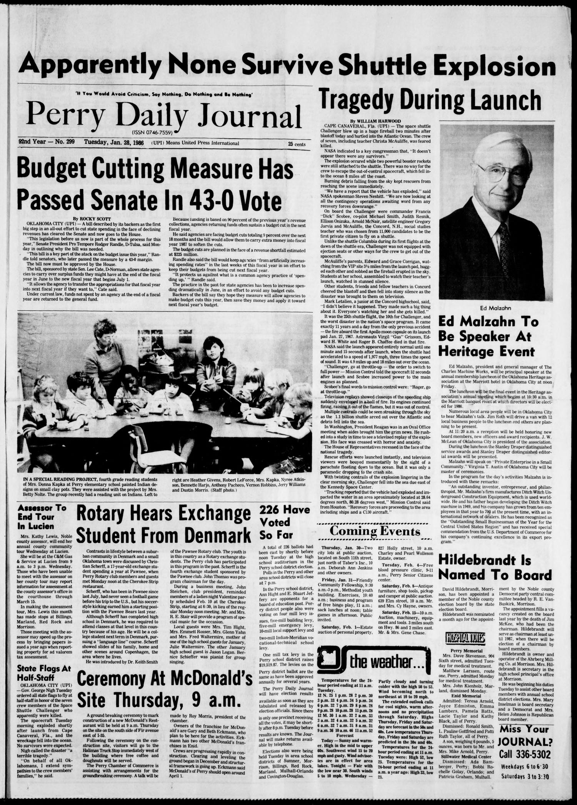

HN HN-758 · January 28, 1986 · Science, Invention & Technology > Astronomy & Space Exploration > Human spaceflight
Source: Banner-Graphic, p. 12 — original page; NASA Rogers Commission findings.
Report: The same-day story described the shuttle Challenger breaking apart shortly after launch, the loss of its seven crew members, the search at sea, and NASA's initial inability to explain the disaster.
Assessment: Contemporaneous catastrophe reporting, not a completed technical diagnosis. The Rogers Commission later identified failure of the pressure seals in the right solid-rocket motor's aft field joint, involving the O-rings. The newspaper's description of an “explosion†should not replace the investigated sequence of structural breakup.
Identity-review candidate peers: HN-759:High
Authentic scans retrieved from Gateway to Oklahoma History (Oklahoma Historical Society). Article crops are located using the archive's own OCR word coordinates and rendered at native crop resolution; page scans are reduced-size access renditions. No images were generated, mocked, or retouched.

Not yet acquired. Queued for provider-specific acquisition testing (see source-acquisition manifest).
URL (preserved verbatim): https://newspapers.library.in.gov/?a=d&d=BG19860128.1.12
Saved research report: Historical_Newspaper_Event_Research_753-777_2026-10-23.md
Evidence note: A newspaper report means a historical publication made a claim; it does not establish that claim as fact. Contemporary reporting is separated from later scholarly context and our own assessment.